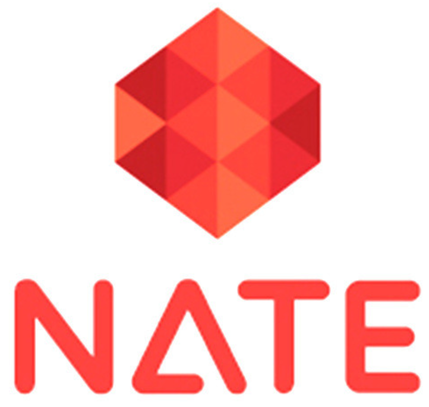

 네이트(영어: Nate)는 SK커뮤니케이션즈가 운영하는 대한민국의 포털 사이트이다. 2002년 7월에 넷츠고와 통합하고 12월, 라이코스코리아와 통합하였다. 2004년에는 온라인 포털사이트 1위인 다음을 처음으로 제치고 1위를 했다. 2009년 2월 28일에는 엠파스와 통합하였다. 2014년 1월 14일에는 자체 검색엔진 서비스를 종료하고 다음 검색엔진을 도입하였다.